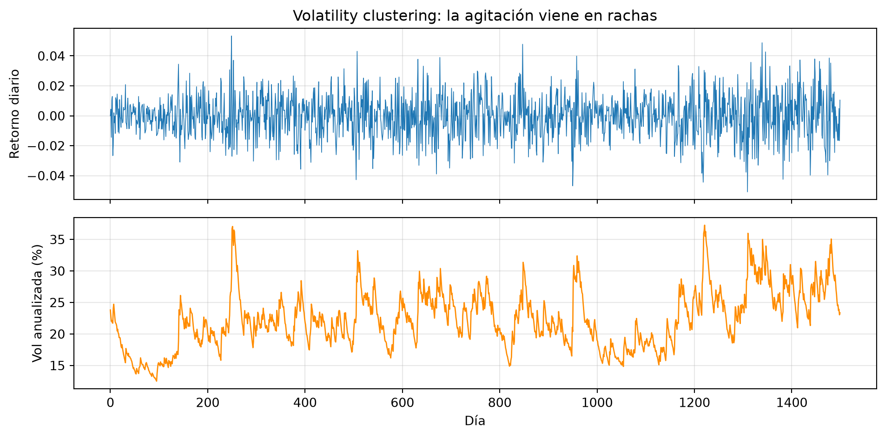
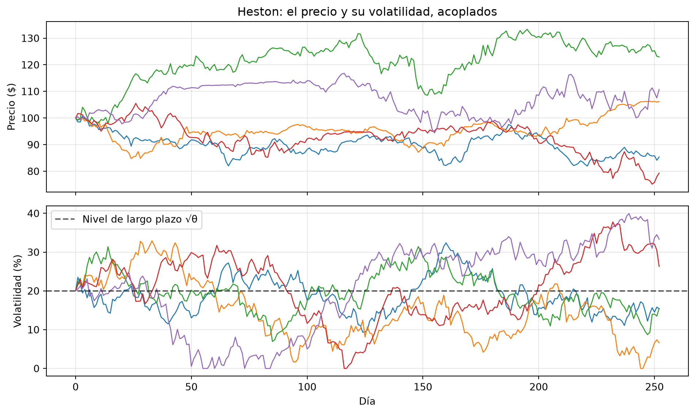
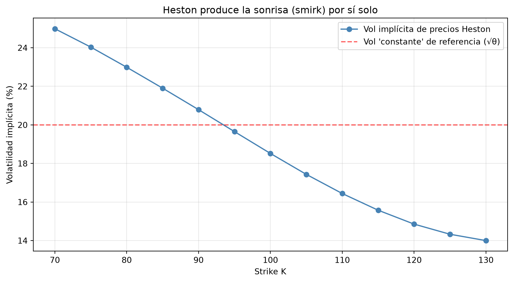
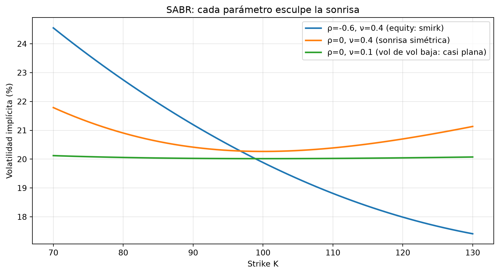

import numpy as np
import matplotlib.pyplot as plt
from scipy import stats
from scipy.stats import norm
rng = np.random.default_rng(42)20 Capítulo 20: Modelos de Volatilidad Estocástica
Heston y SABR: cuando la volatilidad tiene vida propia
Resumen
Black-Scholes trata a la volatilidad como una constante; el mercado la cotiza distinta para cada strike y cada plazo. La salida es promover a la volatilidad a proceso estocástico: en Heston, la varianza sigue su propia dinámica con reversión a la media y correlación negativa con el precio; en SABR, la industria encontró su lenguaje estándar para interpolar sonrisas. Simulamos ambos, vemos cómo generan la sonrisa que Black-Scholes no puede producir, y cerramos el arco completo del libro.
21 Introducción
Cerramos el libro atacando la última gran mentira piadosa de Black-Scholes. En el Capítulo 18 vimos la evidencia: la sonrisa de volatilidad. Si la volatilidad fuera constante como supone el modelo, la vol implícita sería la misma en todos los strikes — y no lo es, en ningún mercado de opciones del planeta.
En el Capítulo 14 arreglamos una parte del problema agregando saltos al precio. Pero hay otro hecho estilizado que los saltos solos no explican: la volatilidad cambia en el tiempo, y de manera persistente. Hay semanas tranquilas y meses de pánico; la volatilidad se agrupa en rachas (volatility clustering), tiende a volver a un nivel normal cuando se dispara, y —el detalle crucial— sube cuando el mercado cae.
La respuesta natural: si la volatilidad se comporta como un proceso aleatorio… modelémosla como un proceso aleatorio. Eso son los modelos de volatilidad estocástica: dos procesos acoplados, uno para el precio y otro para su volatilidad.
22 La evidencia: la volatilidad no se queda quieta
Antes de los modelos, los hechos. Tres rasgos empíricos que cualquier serie financiera larga exhibe:
- Clustering: los días agitados vienen en rachas; la volatilidad de mañana se parece a la de hoy.
- Reversión a la media: los picos de pánico (VIX en 80) no duran; la vol vuelve a su zona normal.
- Efecto apalancamiento (leverage effect): las caídas del precio vienen acompañadas de subas de volatilidad — la correlación entre retornos y cambios de vol es negativa.
# Ilustración con datos simulados de un proceso con clustering (GARCH-like)
n = 1500
vol = np.empty(n); vol[0] = 0.015
ret = np.empty(n)
for t in range(1, n):
# la varianza de hoy hereda de ayer y reacciona al shock de ayer
vol[t] = np.sqrt(0.02 * 0.015**2 + 0.90 * vol[t-1]**2 + 0.08 * ret[t-1]**2)
ret[t] = vol[t] * rng.standard_normal()
fig, axes = plt.subplots(2, 1, figsize=(10, 5), sharex=True)
axes[0].plot(ret, linewidth=0.6)
axes[0].set_ylabel("Retorno diario")
axes[0].set_title("Volatility clustering: la agitación viene en rachas")
axes[1].plot(vol * np.sqrt(252) * 100, color="darkorange", linewidth=1)
axes[1].set_ylabel("Vol anualizada (%)")
axes[1].set_xlabel("Día")
for ax in axes:
ax.grid(True, alpha=0.3)
plt.tight_layout()
plt.show()
El GBM no puede producir el panel de arriba: su volatilidad es una línea horizontal. Necesitamos que \(\sigma\) tenga su propia ecuación.
23 El modelo de Heston
Steven Heston (1993) propuso el modelo de volatilidad estocástica más usado de la historia, porque combina realismo con una virtud práctica enorme (tiene fórmulas semi-cerradas para valuar opciones). Son dos procesos acoplados — el precio y su varianza \(v_t = \sigma_t^2\):
\[\begin{aligned} dS &= \mu S\, dt + \sqrt{v}\, S\, dW^S \\ dv &= \kappa (\theta - v)\, dt + \xi \sqrt{v}\, dW^v \end{aligned} \qquad \text{con } \operatorname{corr}(dW^S, dW^v) = \rho\]
Cada parámetro tiene una interpretación económica limpia:
| Parámetro | Nombre | Interpretación |
|---|---|---|
| \(\theta\) | varianza de largo plazo | El “nivel normal” al que la varianza siempre vuelve |
| \(\kappa\) | velocidad de reversión | Cuán rápido vuelve (\(\kappa=2\): vida media ≈ 4 meses) |
| \(\xi\) | vol de la vol | Cuán violentos son los espasmos de la volatilidad |
| \(\rho\) | correlación | El efecto apalancamiento; en equity, \(\rho < 0\) siempre |
| \(v_0\) | varianza inicial | Dónde arranca la vol hoy |
La ecuación de la varianza es un proceso CIR (Cox-Ingersoll-Ross, el mismo que modela tasas de interés): el término \(\kappa(\theta - v)\,dt\) la empuja hacia \(\theta\) (reversión), y el \(\sqrt{v}\) del ruido evita que se haga negativa.
23.1 Simulación
def simular_heston(S0, v0, mu, kappa, theta, xi, rho, T, n_pasos, n_sims, rng):
"""Simula Heston con esquema de Euler (full truncation para v>=0)."""
dt = T / n_pasos
S = np.empty((n_pasos + 1, n_sims)); S[0] = S0
v = np.empty((n_pasos + 1, n_sims)); v[0] = v0
for t in range(1, n_pasos + 1):
# Dos ruidos correlacionados: Z_v = rho*Z_s + sqrt(1-rho²)*Z_perp
Z_s = rng.standard_normal(n_sims)
Z_v = rho * Z_s + np.sqrt(1 - rho**2) * rng.standard_normal(n_sims)
v_pos = np.maximum(v[t-1], 0) # truncamos en 0
v[t] = v[t-1] + kappa * (theta - v_pos) * dt + xi * np.sqrt(v_pos * dt) * Z_v
S[t] = S[t-1] * np.exp((mu - 0.5 * v_pos) * dt + np.sqrt(v_pos * dt) * Z_s)
return S, np.maximum(v, 0)
# Parámetros típicos de un índice de acciones
params = dict(S0=100, v0=0.04, mu=0.05, kappa=2.0, theta=0.04,
xi=0.5, rho=-0.7, T=1.0, n_pasos=252)
S_h, v_h = simular_heston(**params, n_sims=5000, rng=rng)
print(f"Vol inicial: {np.sqrt(params['v0']):.0%}")
print(f"Vol de largo plazo (θ): {np.sqrt(params['theta']):.0%}")
print(f"Vol promedio simulada: {np.sqrt(v_h.mean()):.1%}")
print(f"Correlación ret-Δvol: "
f"{np.corrcoef(np.diff(np.log(S_h[:,0])), np.diff(v_h[:,0]))[0,1]:.2f} (ρ={params['rho']})")Vol inicial: 20%
Vol de largo plazo (θ): 20%
Vol promedio simulada: 19.9%
Correlación ret-Δvol: -0.70 (ρ=-0.7)fig, axes = plt.subplots(2, 1, figsize=(10, 6), sharex=True)
axes[0].plot(S_h[:, :5], linewidth=1)
axes[0].set_ylabel("Precio ($)")
axes[0].set_title("Heston: el precio y su volatilidad, acoplados")
axes[1].plot(np.sqrt(v_h[:, :5]) * 100, linewidth=1)
axes[1].axhline(np.sqrt(params["theta"]) * 100, color="black", linestyle="--",
alpha=0.6, label="Nivel de largo plazo √θ")
axes[1].set_ylabel("Volatilidad (%)")
axes[1].set_xlabel("Día")
axes[1].legend()
for ax in axes:
ax.grid(True, alpha=0.3)
plt.tight_layout()
plt.show()
Compará las trayectorias de abajo con la línea horizontal que sería la vol del GBM: acá cada camino tiene su propia historia de calma y turbulencia, siempre gravitando alrededor de \(\sqrt{\theta}\). Y mirá las trayectorias del precio junto a las de su vol: cuando el precio cae, su vol tiende a dispararse — el \(\rho\) negativo trabajando.
23.2 Heston genera la sonrisa
La prueba de fuego: valuemos opciones bajo Heston (por Monte Carlo, con drift \(r\)) y preguntémosle a Black-Scholes qué volatilidad implícita “ve” en cada strike. Si el modelo es bueno, debería aparecer la sonrisa del Capítulo 18 — sin que se la hayamos puesto a mano.
r = 0.03
# Simulación neutral al riesgo (drift = r) con muchas trayectorias
S_rn, _ = simular_heston(**{**params, "mu": r}, n_sims=100_000,
rng=np.random.default_rng(7))
ST = S_rn[-1]
def bs_call(S, K, T, r, sigma):
d1 = (np.log(S / K) + (r + 0.5 * sigma**2) * T) / (sigma * np.sqrt(T))
return S * norm.cdf(d1) - K * np.exp(-r * T) * norm.cdf(d1 - sigma * np.sqrt(T))
def vol_implicita(precio, S, K, T, r):
"""Vol implícita por bisección (robusta en todos los strikes)."""
lo, hi = 1e-4, 3.0
for _ in range(80):
mid = 0.5 * (lo + hi)
if bs_call(S, K, T, r, mid) < precio:
lo = mid
else:
hi = mid
return mid
strikes = np.arange(70, 131, 5)
smile = []
for K in strikes:
precio_heston = np.exp(-r * params["T"]) * np.maximum(ST - K, 0).mean()
smile.append(vol_implicita(precio_heston, params["S0"], K, params["T"], r))
fig, ax = plt.subplots(figsize=(9, 5))
ax.plot(strikes, np.array(smile) * 100, "o-", color="steelblue",
label="Vol implícita de precios Heston")
ax.axhline(np.sqrt(params["theta"]) * 100, color="red", linestyle="--", alpha=0.6,
label="Vol 'constante' de referencia (√θ)")
ax.set_xlabel("Strike K")
ax.set_ylabel("Volatilidad implícita (%)")
ax.set_title("Heston produce la sonrisa (smirk) por sí solo")
ax.legend()
ax.grid(True, alpha=0.3)
plt.tight_layout()
plt.show()
Ahí está: la curva desciende de izquierda a derecha —el smirk de los mercados de acciones— generada endógenamente por la dinámica del modelo. La mecánica: el \(\rho\) negativo hace que los escenarios de caída vengan con volatilidad alta, engordando la cola izquierda de la distribución de \(S_T\); las puts de strikes bajos pagan justo ahí, valen más, y su vol implícita sube. La forma de la sonrisa es la huella digital de los parámetros: \(\rho\) controla la inclinación, \(\xi\) la curvatura, y \(\kappa, \theta, v_0\) el nivel y su estructura temporal.
En la práctica profesional, el flujo es el inverso al nuestro: se calibra — se buscan los parámetros de Heston que reproducen los precios de opciones observados hoy — y con el modelo calibrado se valúan productos exóticos, se calculan griegas consistentes con la sonrisa y se arman coberturas.
24 SABR: el estándar de la industria para la sonrisa
En los mercados de tasas de interés (swaptions, caps/floors), el modelo dominante es otro: SABR (Stochastic Alpha, Beta, Rho; Hagan et al., 2002):
\[\begin{aligned} dF &= \alpha F^{\beta} \, dW^F \\ d\alpha &= \nu \, \alpha \, dW^{\alpha} \end{aligned} \qquad \operatorname{corr}(dW^F, dW^{\alpha}) = \rho\]
donde \(F\) es el precio forward y \(\alpha\) su volatilidad. Diferencias de diseño respecto de Heston: la vol es lognormal y sin reversión (más simple), y el exponente \(\beta \in [0,1]\) interpola entre dinámica normal (\(\beta=0\), usada en tasas) y lognormal (\(\beta=1\), como acciones).
¿Por qué conquistó la industria un modelo menos realista que Heston? Por una razón práctica imbatible: Hagan y coautores derivaron una fórmula aproximada cerrada para la volatilidad implícita en función de \((K, F, \alpha, \beta, \rho, \nu)\). Sin simulaciones, sin transformadas: la sonrisa entera en una expresión evaluable al instante. SABR no se usa tanto para simular mercados como para describir e interpolar sonrisas: con 3-4 parámetros ajustás los puntos cotizados y leés cualquier strike intermedio.
def sabr_vol(K, F, T, alpha, beta, rho, nu):
"""Vol implícita SABR (aprox. de Hagan 2002), vectorizada en K."""
K = np.atleast_1d(K).astype(float)
vol = np.empty_like(K)
atm = np.isclose(K, F)
FK_beta = (F * K) ** ((1 - beta) / 2)
logFK = np.log(F / K, where=~atm, out=np.zeros_like(K))
z = (nu / alpha) * FK_beta * logFK
x_z = np.log((np.sqrt(1 - 2 * rho * z + z**2) + z - rho) / (1 - rho),
where=~atm, out=np.ones_like(K))
# término de corrección temporal (común a ambos casos)
corr = (1 + T * ((1 - beta)**2 / 24 * alpha**2 / (F * K) ** (1 - beta)
+ rho * beta * nu * alpha / (4 * FK_beta)
+ (2 - 3 * rho**2) / 24 * nu**2))
vol = np.where(
atm,
alpha / F ** (1 - beta) * corr,
alpha / (FK_beta * (1 + (1 - beta)**2 / 24 * logFK**2
+ (1 - beta)**4 / 1920 * logFK**4)) * (z / x_z) * corr,
)
return vol
F, T_s = 100, 1.0
strikes_s = np.linspace(70, 130, 60)
fig, ax = plt.subplots(figsize=(9, 5))
escenarios = [
(-0.6, 0.4, "ρ=-0.6, ν=0.4 (equity: smirk)"),
(0.0, 0.4, "ρ=0, ν=0.4 (sonrisa simétrica)"),
(0.0, 0.1, "ρ=0, ν=0.1 (vol de vol baja: casi plana)"),
]
for rho_i, nu_i, etiqueta in escenarios:
vols = sabr_vol(strikes_s, F, T_s, alpha=0.20, beta=1.0, rho=rho_i, nu=nu_i)
ax.plot(strikes_s, vols * 100, linewidth=2, label=etiqueta)
ax.set_xlabel("Strike K")
ax.set_ylabel("Volatilidad implícita (%)")
ax.set_title("SABR: cada parámetro esculpe la sonrisa")
ax.legend()
ax.grid(True, alpha=0.3)
plt.tight_layout()
plt.show()
El gráfico es el manual de instrucciones del modelo: \(\nu\) (vol de vol) curva la sonrisa, \(\rho\) la inclina, y \(\alpha\) fija el nivel. Un operador de swaptions calibra estos parámetros a las cotizaciones de la mañana y tiene toda la superficie descripta para el resto del día.
Nota¿Heston o SABR? El criterio profesional
No compiten: se usan para cosas distintas. SABR es el estándar para cotizar e interpolar sonrisas (sobre todo en tasas) por su fórmula instantánea. Heston es el caballo de batalla para simular y valuar productos dependientes de la trayectoria (exóticos, estructurados) porque tiene una dinámica temporal completa y consistente. Y la familia sigue: local vol (Dupire), modelos local-estocásticos (LSV), rough volatility — la frontera actual de la investigación.
25 El arco completo del libro
Detengámonos un momento en el camino recorrido, porque este capítulo lo cierra:
- GBM (Cap. 13): precio aleatorio, vol constante. Elegante, insuficiente.
- Saltos (Cap. 14): el precio puede moverse discontinuamente → colas pesadas.
- La sonrisa (Cap. 18): el mercado cotiza las violaciones de Black-Scholes, cada día, en cada strike.
- Volatilidad estocástica (este capítulo): la vol tiene dinámica propia → clustering, leverage effect, y la sonrisa reproducida desde los fundamentos.
Cada modelo nace de un hecho empírico que el anterior no explicaba. Esa es la lección metodológica más importante que este libro puede darte: los modelos no son verdades, son herramientas con dominio de validez — y el trabajo del analista cuantitativo es conocer ese dominio, medir lo que queda afuera (Módulo 3 entero) y elegir la herramienta adecuada para cada pregunta.
26 Errores comunes
AdvertenciaTrampas frecuentes
- Varianza negativa en la simulación de Heston: el esquema de Euler ingenuo produce \(v < 0\) y
sqrtexplota. Usá full truncation (como en el código) o esquemas exactos (QE de Andersen). - Ignorar la condición de Feller: si \(2\kappa\theta < \xi^2\), la varianza toca cero con probabilidad positiva y la simulación exige más cuidado (nuestros parámetros la violan levemente — es lo habitual al calibrar equity — y por eso el truncamiento importa).
- Usar la fórmula de Hagan fuera de su dominio: es una aproximación asintótica; con \(T\) grande, \(\nu\) alto o strikes extremos puede dar vols absurdas (incluso densidades negativas). Verificá contra Monte Carlo.
- Calibrar demasiados parámetros a pocos datos: con 5 strikes cotizados y 5 parámetros libres, el ajuste es perfecto y no significa nada — el sobreajuste del Capítulo 17 aplica también acá.
- Olvidar el drift neutral al riesgo al valuar: para pricing, el drift del precio es \(r\); el \(\mu\) real solo importa para proyecciones.
27 Ejercicios Propuestos
ImportanteEjercicios
- El rol de ρ: re-simulá Heston con \(\rho \in \{-0.9, 0, +0.5\}\) y superponé las tres sonrisas resultantes. Verificá que \(\rho\) controla la inclinación.
- El rol de ξ: hacé lo mismo variando la vol de vol (\(\xi \in \{0.1, 0.5, 1.0\}\)) con \(\rho = 0\). ¿Qué pasa con la curvatura?
- Feller al límite: simulá con parámetros que violen fuertemente la condición de Feller (\(\xi = 1.5\)) y medí qué fracción de trayectorias de varianza toca cero.
- Calibración mínima de SABR: generá una sonrisa “de mercado” con 5 puntos usando Heston y calibrá \((\alpha, \rho, \nu)\) de SABR (con \(\beta = 1\) fijo) por mínimos cuadrados usando
scipy.optimize.minimize. Graficá el ajuste. - Term structure: computá la sonrisa de Heston para \(T \in \{0.25, 1, 3\}\) años. ¿La sonrisa se aplana con el plazo? ¿Por qué la reversión a la media de la varianza produce ese efecto?
28 Referencias
- Heston, S. (1993). A Closed-Form Solution for Options with Stochastic Volatility with Applications to Bond and Currency Options. Review of Financial Studies, 6(2), 327–343.
- Hagan, P., Kumar, D., Lesniewski, A., & Woodward, D. (2002). Managing Smile Risk. Wilmott Magazine, 84–108.
- Gatheral, J. (2006). The Volatility Surface: A Practitioner’s Guide. Wiley.
- Andersen, L. (2008). Simple and Efficient Simulation of the Heston Stochastic Volatility Model. Journal of Computational Finance, 11(3), 1–42.